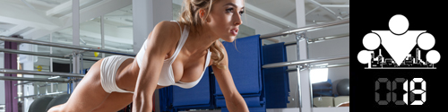

Today we want to talk about a trap you can fall into in the chase to change your appearance. Earlier we already said that appearance is a consequence of lifestyle, and that you can't get around regulating nutrition here. Acquiring useful habits that have a positive effect on health is great, but when obsession with weight and appearance crosses all boundaries, it's already time to talk about a mental disorder related to food (so-called orthorexia).

What is an eating disorder (ED)?
It's a condition that includes medical and psychological aspects. Some eating disorders have already become quite common:
1. Anorexia nervosa (consuming a small amount of food and, as a result, low body weight, leading to various accompanying illnesses and even death)
2. Bulimia nervosa (regular episodes of overeating, often accompanied by compensatory actions to control weight, such as vomiting, taking laxatives and diuretics, fasting, and excessive training)
3. Binge-eating disorder
These are the most popular representatives, but they're not all of it. ED often sits next to such mental disorders as depression, anxiety, and obsessive-compulsive disorders. People with signs of ED become obsessed with food, their weight, and their physique.
How serious is it?
Here's a bit of statistics. Up to 8% of the population suffers from eating disorders [1]. People with anorexia nervosa die from exhaustion or illnesses caused by insufficient nutrition in 20% of cases. People who have eating disorders die from causes related to this condition in 5% of cases. Yes, it's serious.

The risk group is relatively young women (20–30 years) regardless of social status, although ED can also appear in other age groups and in men.
How can you tell if you have this kind of mental disorder?
There are several main emotional and behavioral signs of ED developing in a person (hold onto your chair):
1. Fear of gaining extra weight
2. A negative or distorted self-image ("I'm fat / I have too little muscle")
3. Frequent posing in front of the mirror to register changes in body composition. Self-esteem that depends on physical shape.
4. Fear of eating in public places or with other people
5. Obsession with food
6. Excessive interest in watching cooking shows and collecting recipes
7. Hoarding food
8. Eating only "safe" and "healthy" products
9. Consciously skipping meals
10. Irritability
11. Self-harm
12. Interest in consciousness-altering substances (alcohol, drugs)
13. Strong adherence to everyday habits and appearance of anxiety and irritation when they're broken
14. Cooking food for others and refusing to eat it yourself
15. Eating strange combinations of foods (cake with buckwheat)
16. Refusal of normal social activities
17. Preference for loose, baggy clothing
18. Emotional poverty or sharp mood swings.
There are also signs characteristic of each specific condition (for example, denial of low body weight for people with anorexia).
What's dangerous about eating disorders?
Besides their possible social consequences? One way or another, they disrupt your diet. Because of insufficiency and poverty of the diet, the following registered physiological changes sooner or later develop:
1. Chronic fatigue
2. Dehydration
3. Low heart rate (bradycardia)
4. Low blood pressure
5. Electrolyte imbalance
6. Osteoporosis
7. Loss of endurance
8. Loss of strength
9. Muscle cramps
10. Overheating
How do eating disorders develop?
A quite harmless desire to "get yourself in order" can trigger the development of ED, and most often the following personal factors figure in:
1. An unfounded belief that "the less you weigh, the better"
2. Perfectionism, inflated criticism toward your own body
3. An attitude of "the result at any cost", set for yourself or by other people (a coach or a sexual partner, for example)
4. Compensating in nutrition for failures in other areas (it didn't work out there, but at least I can lose weight / look good)
What to do if you suspect you already have an ED, or what to do to avoid this?

First of all we'll say that in certain circumstances only professionals can treat ED, but there are certain recommendations for personal self-control. A lot of people lose sight of the original goal of regulating weight, namely improving health and body function. If you remember biology at least at school volume, you know that structure and function of something in living organisms are tightly linked, and we've already talked about this, and your body is a projection of our lifestyle. So when changing the body, don't forget that that's only a pleasant bonus. And you're going more toward health, functionality, some specific skills and abilities. So in the process of changing yourself you shouldn't forget this, and use practices that will harm health.
If you include physical activity (and we all do regular training) in your daily schedule, remember that it should bring you pleasure (if you go to the bars under pressure but love to dance — better dance more). A diet or training should not constantly burden you or exhaust you emotionally. According to the WHO definition, health is physical, emotional, and social well-being. Try to keep everything in balance, rather than strengthening one aspect of health at the expense of another.
Try to set realistic and achievable goals to avoid physical or mental "burnout" in the process of reaching them. Periodically ask yourself "could I eat or train like this my whole life?" If the answer is "yes" — everything is fine. If the answer is "no" — you should review your nutrition and/or training.
Someone may think that our advice today concerns only anxious young women, but believe us, the audience for whom this is relevant is broad. How does the problem concern, say, a guy who wants a strong and good-looking body? In that case a chain of events usually develops: "good-looking body — more muscle — even more muscle — more muscle at any cost" or "good-looking body — more muscle — less fat for definition — even less fat", which again leads to eating disorders.
In general that's the alarmist and unsettling infopost we got today. You can get more familiar with the topic via the links at the end of the post, and we wish you not to lose your head and to reach the goals you set.
Sources
1. Prevalence of eating disorders over the 2000-2018 period: a systematic literature review, Marie Galmiche, Pierre Déchelotte, Grégory Lambert, Marie Pierre Tavolacci, Am J Clin Nutr. 2019 May 1;109(5):1402-1413